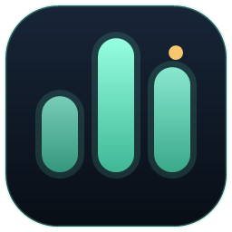

Oi-21 System Pulse
Moniteur système pour Windows
CPU, GPU, mémoire, réseau, disques et FPS en temps réel, avec un overlay à poser par-dessus vos jeux.
Télécharger pour Windows- 0,7 Mode téléchargement, rien à installer
- ~0,5 spour s’ouvrir
- 100 % localaucune donnée mesurée ne quitte votre PC
Installer
- Clic droit sur le zip, puis « Extraire tout… » vers un dossier que vous gardez.
- Double-cliquez sur
SystemPulse.exe.
L’application n’est pas encore signée numériquement : Windows peut afficher « Windows a protégé votre ordinateur ». Cliquez sur « Informations complémentaires », puis « Exécuter quand même ». Le code source est public pour que vous puissiez le vérifier.
Bon à savoir
La charge GPU est mesurée sur toutes les cartes (NVIDIA, AMD, Intel) ; sa température seulement sur NVIDIA. La température CPU dépend de la carte mère : « N/D » quand elle n'est pas exposée, plutôt qu'une valeur inventée — sauf si HWiNFO64 tourne à côté (son partage mémoire activé) et System Pulse relancé en administrateur. Les FPS utilisent PresentMon (Intel, licence MIT) et demandent les droits administrateur. Au démarrage, l’application lit seulement le fichier version.json de ce site pour signaler une nouvelle version ; rien n’est envoyé.